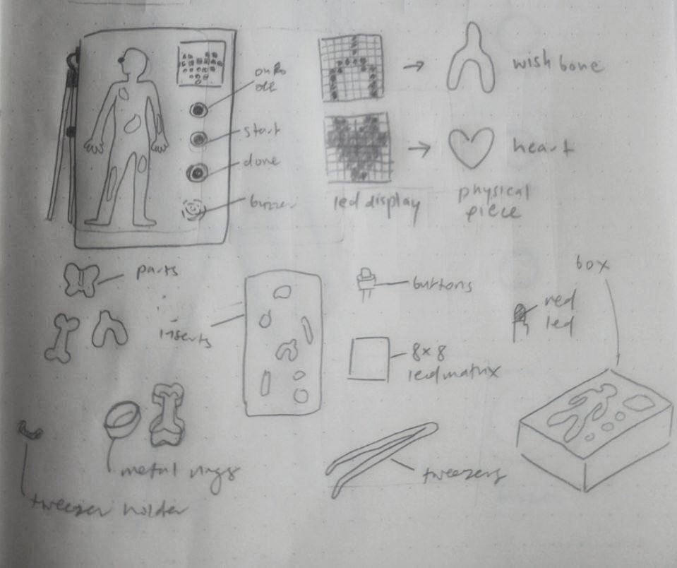
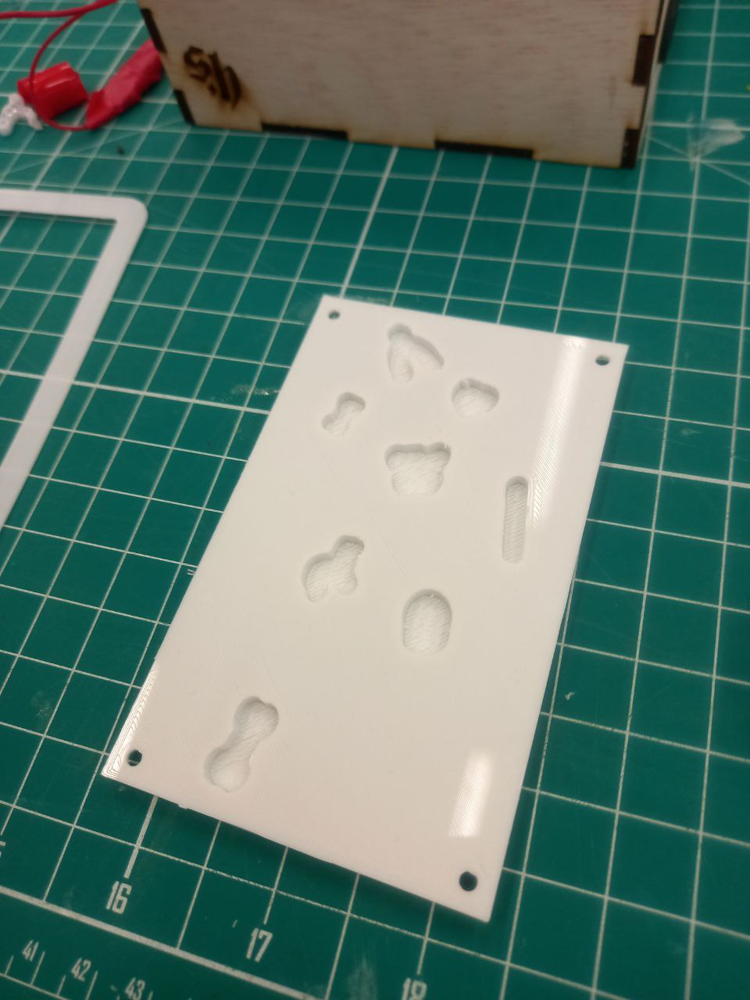
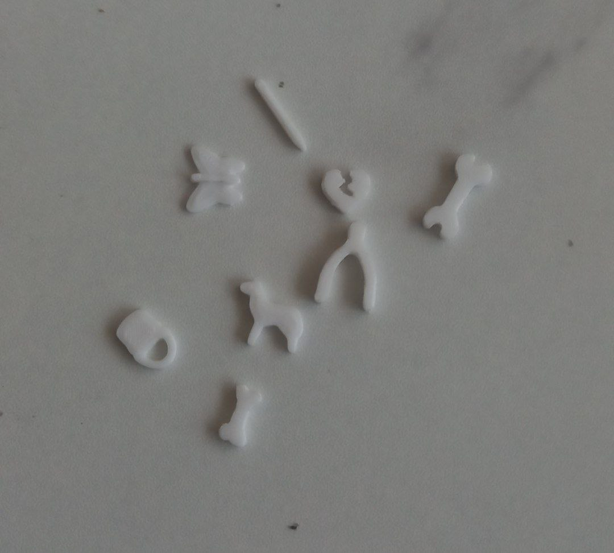

final project
the last graded assignment we have of the year is of us creating a project that involves everything we have learn in class the past semester. the project needs to be made with a microcontroller, input and output devices, laser cut housing and 3d printed components.
my project idea
initially i wanted to make a plant hydration detector that would sense whether my mom's community garden vegetables needed to be watered and send her a push notification on her phone to go down and water her plants. but i realised that the arduino would have to be wifi enabled to send notifications and the community garden didn't have wifi lol, so i scrapped the idea.
my next idea was to recreate the classic operation game in arduino. the inspiration for this project is this and this.
this is a diagram of how my project would work:


|
and the parts
|  |
this is my project description and the parts i will need:
circuit and soldering
My circuit is split into 2 parts; one with the dot matrix display and button, and one with the buzzer, red LED, metal tweezers and metal rings. They are in a parallel circuit as the way the later one works is by having an incomplete circuit be completed when the metal parts touch each other, and I wanted the dot matrix to be powered the entire time. Additionally, I tried to make them separately before connecting them in a parallel circuit. This is because any issues with wiring are clearer when the circuit is deconstructed step by step.
I wasn’t a physics student and worked almost exclusively with micro:bit for years so my knowledge on wiring is very limited. This is how I tried to draw out my circuit (circuit drawing mine.jpeg). Thankfully, my brother studied mechatronics so I enlisted his help in translating my terribly drawn circuit into one for Arduino (circuit drawing).
For the buzzer and LED part, I was advised to test it out on a single body part first. Choosing the heart, I laser cut out a heart shape on 2 layers of 3mm wood which was glued onto an uncut layer. I wrapped the inside of the heart with aluminium foil that was connected to GND and taped a wire onto my tweezer that was connected to 5V. Between those 2 wires on the breadboard were an LED, a 10ohm(?) resistor and an active buzzer.
In my final version, I had 8 different pieces of aluminium foil for 8 compartments which all had to be connected to GND so I stripped the ends of 8 wires and soldered them all into one main wire. This is probably not the safest way of doing it but hey, it ended up working well. I also tried to solder the other end of the wire to the foil rings but the solder would not stick so I just taped them onto it.
Since that was done, I moved onto the LED matrix part. This was relatively simple with the matrix being wired into GND, VCC, P12, P11, P10 for DIN, CS, CLK, and the button being wired into P3 and GND.
Here is the inital wiring of my full project, combining both parts.
Unfortunately, I kept running into problems with the LED matrixes available in class. The first one I received was unsoldered, the second one just would not turn on, and the third on had a few broken LEDs. I eventually got fed up with them so I decided to switch to using an LCD screen which would just write out the names of the parts. Thankfully the LCD was connected to a I2C device so I only had to wire it into P4,P5 which are the SDA and SCL of the Nano, and into VCC and GND.
There wasnt any 5V VC power jack plugs in my house so I wasn’t able to actually test if it worked before my presentation. I really wanted it to stay neat so I taped wires of the same components together.
My final circuit:
code
For the dot matrix, I designed an 8x8 design for each body piece.

|
Using this Online led matrix binary and hex codes generator, I was able to generate hex codes for the led displays I made for each body piece.
|
Adapting the traffic light code from a previous lesson, I created 10 different states for each display variation. When the button was pushed, a new state would be shown. Here is the rough code I did that probably does not work.
|
The initial idea was to randomise which part was shown on the display by adding a random(0,8) when the button was pushed. One issue with this is that there is a possibility of repeating parts even when the part has already been removed. Looking online, most of the solutions for this was the Fisher-Yates shuffle algorithm. The algorithm puts all the elements into a hat and continually determines the next element by randomly drawing an element from the hat until no elements remain. How I was thinking of implementing it into my code was by putting my different strings of text into an array and shuffling another array of the numbers 0 to 8, the order of the numbers in the second array would call the corresponding string in the previous sequence. However, even though I was able to create a code that printed a shuffled sequence number by number, adapted from this website.
|
I didn’t know how to use the values from that sequence to call values from another array that was in a separate void. In the end, I decided on just using a set sequence of text to display as I ran out of time to figure the code out and found nothing online on how to do it. Until now, I still don’t know if that is even possible to do in processing.
Here is my final code adapted for the LCD screen. Download here
|
3D printing
For the body part pieces, I found 3d models already available online which were very accurate to the original version and saved me quite a lot of time if I had tried to make them myself.

|
I would’ve still liked to create my own versions but I was too busy with submissions so I took the easy way out. This is the model that I used, all credits to Chloe Peters, the creator of this.
Now I had to make the insert the pieces would rest in. By making outlines of the pieces, I used Adobe Illustrator to give offset the outline by 2mm to give the tweezers just enough space the get in and pick up the pieces without hitting the metal.

|
Here is the insert I made, click the image to download:


|
The walls of the insert were 1mm thick to reduce the weight hanging onto a thin sheet of wood on the top panel, and to reduce printing time. I also added holes for screws for the insert to be screwed into place onto the top panel. My first few prints ended up mistakes as I forgot to mirror the design before extruding the recesses. The printers at the MAD factory in T21 also managed to mess up the scale for some reason so it ended up being way too small to use and I had to reprint at T14.

|
Printing process photos:


|
These are the final pieces I 3d printed
|   |
laser cutting
As I am a big art nerd, the human body design on the box is actually Leonardo da Vinci’s A Nude Man from the Front drawing.
Using Adobe Illustrators image trace function, I easily made a vector design of the image to make it cleaner and clearer when engraved.

|
The first box I made was directly in Illustrator without a 3d model in Fusion360 first (cuz i was lazy lol) and had cutouts for the led matrix and button, and had small speaker holes for the buzzer. It looked like this:


|
I made it 15cm x 12cm so the box wouldn’t be too big and bulky but I honestly regretted making it so small as the components were forced too close to each other to be wired safely. Since the holes for the pieces cut out most of the body design, I ended up scaling the design and removing some parts to space out the rest more evenly.
The second box I made was finally in Fusion360. All I did was change the parameters of my music box to the dimensions of the new box (yeah i was still lazy). I changed the size of the box from the previous design as I had swapped my dot matrix for an LCD. As the LCD is wide and thin, I placed it at the top of the box with the button and buzzer right next to the design, giving them more space for wiring. What else I added to the box was a 3mm diameter hole for the tweezers wire to insert through and holes for the DC power jack and power switch. In addition, I labelled each body part as now the LCD was displaying the names of the pieces. I wanted to leave in the part that allowed the top panel to flip open as I thought that would be easier to access my wiring and spare parts in the box if need be. But once I printed it out and tested the box, the two extruded side parts of the top broke off due to the weight of the components and screws attached to it.


|
This leads me to my final box. I scaled the base and left and right panels of the box from 206mm to 203mm so my 203 mm long top panel could rest directly on the front and back panels. It is held in place by the left and right panels being a tight fit, holding it together with tension. I also changed the sizes of the holes cut out for the power switch and DC power jack as they were the wrong size previously. Click here to download.


|
final product
project ownership card
presentation slide

|
video